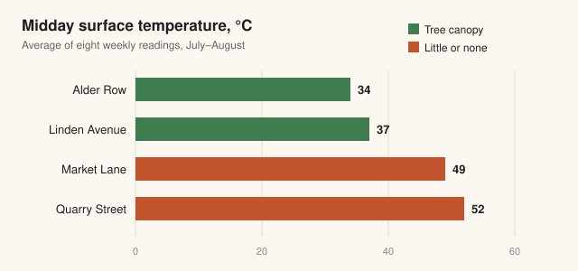

Shade by design: how street trees cool a city block
A summer survey of surface temperatures shows tree-lined streets running up to 18 °C cooler than bare ones.
On the hottest afternoon of last summer, two streets on the east side of Harbor City sat less than a kilometre apart and felt like different climates. On Alder Row, where a double line of plane trees closes over the road, the asphalt measured 34 °C. On Quarry Street, three blocks south and almost treeless, it reached 52 °C.
Those readings came from a volunteer survey run by the city's parks department, which spent eight weeks mapping surface temperatures with handheld infrared thermometers. The results, published this week, put numbers to something residents have long sensed: shade is not a luxury on a hot street, it is infrastructure.
Why a canopy works
Trees cool a street in two ways. The first is simple shade: leaves intercept sunlight before it reaches pavement, brick and car roofs, which would otherwise absorb it and release it slowly through the evening. The second is evaporation. A mature tree draws water from the soil and releases it through its leaves, and turning that water into vapour consumes energy that would otherwise warm the air.
The survey found the effect is strongest where the canopy is continuous. Isolated trees made a difference of a few degrees in their own shadow, but blocks where crowns touched across the road stayed cooler along their whole length, because the street never had a chance to soak up the midday sun.
We used to think of street trees as decoration that we paid to maintain. The data says they are some of the hardest-working equipment the city owns.
That was the verdict of Dana Whitfield, who leads the department's urban forestry team and designed the survey with a group of local schools. Students took many of the readings, returning to the same spots at the same hour each week.

Where the shade is missing
The map also shows who goes without. Neighbourhoods built during the last housing boom, with wide roads and narrow verges, have a fraction of the canopy of the older districts. Residents there are more likely to wait for buses in full sun, and less likely to have air conditioning at home.
The department plans to plant 4,000 trees over the next five years, starting with the streets that measured hottest. Choosing species is part of the challenge: a tree for a hotter future has to tolerate drought, compacted soil and the reflected heat of the road, and it has to keep doing so for decades.
Planting is the cheap part, Whitfield said. The real commitment is the first three summers, when young trees need regular watering before their roots reach deeper moisture. The city is recruiting residents to adopt a tree and water it during dry spells, an approach that has already cut losses among new plantings in two pilot districts.
What comes next
Volunteers will repeat the measurements next summer, adding evening readings to capture how much heat the streets give back after dark. That release matters for sleep and health during heatwaves, and it is where researchers expect the gap between leafy and bare streets to matter most.
For now, the advice to residents is practical: walk on the shaded side, and if a new sapling appears outside your door, give it a bucket of water when the weather turns hot.
Comments (3)